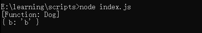
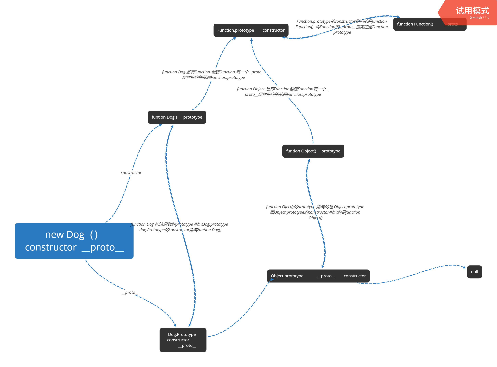

javascript原型
函数对象
每一个对象都与一个可以继承属性的原型对象相关联。从对象文字创建的所有对象都链接到Object.prototype，这是一个JavaScript标准对象
所有引用类型（函数，数组，对象）都拥有__proto__属性（隐式原型）
所有函数拥有prototype属性（显式原型）（仅限函数）
原型对象：拥有prototype属性的对象，在定义函数时就被创建
__proto__：是一个对象拥有的内置属性，是JS内部使用寻找原型链的属性。可以理解为它是一个指针，用于指向创建它的函数对象的原型对象prototype（即构造函数的prototype）用chrome和FF都可以访问到对象的proto属性，IE不可以。
构造函数
1 | function Dog(name,age) { |
实例mydog的隐式原型__proto__指向的是他构造函数的显示原型prototypemydog.__proto__===Dog.prototype
当调用某种方法或查找某种属性时，首先会在自身调用和查找，如果自身并没有该属性或方法，则会去它的__proto__属性中调用查找，也就是它构造函数的prototype中调用查找。所以很好理解实例继承构造函数的方法和属性：
mydog本身没有eat方法，所以会去Dog的显式原型中调用eat，即实例继承构造函数的方法。
原型和原型链
1 | Function.prototype.a = "w"; |
上面打印结构 打印1是undefiend 打印2是原因是:
mydog是Dog()的实例，是一个Dog对象，它拥有一个属性值__proto__，并且__proto__是一个对象，包含两个属性值constructor和__proto__
我们打印一下mydog的__proto__属性和constructor属性console.log(mydog.__proto__.constructor)
console.log(mydog.__proto__.__proto__)
结果如下

我们调用constructor属性，mydog.__proto__.__proto__.constructor得到的是Object()函数，Dog.prototype的隐式原型的constructor指向Object()，即Dog.prototype.proto.constructor == Object()
从mydog.__proto__.constructor返回的结果为构造函数本身 Dog.prototype.constructor == Dog()所以mydog._proto.proto== Object.prototype
所以mydog.b打印结果为b，mydot没有b属性，会一直通过__proto__向上查找，最后当查找到Object.prototype时找到，最后打印出b，向上查找过程中，得到的是Object.prototype，而不是Function.prototype，找不到a属性，所以结果为undefined，这就是原型链，通过__proto__向上进行查找，最终到null结束
总结：
- 查找属性，如果本身没有，则会去__proto__中查找，也就是构造函数的显式原型中查找，如果构造函数的显式原型中也没有该属性，则继续向构造函数的显式原型的__proto__中查找，一直到null，如果没有则返回undefined
- mydog.__proto__.constructor == function Dog(){}
- mydog.__proto__.__proto__== Object.prototype
- mydog.__proto__.__proto__.__proto__== Object.prototype.__proto__ == null
- 通过__proto__形成原型链而非protrotype
结合下面的图片更容易理解原型和原型链
